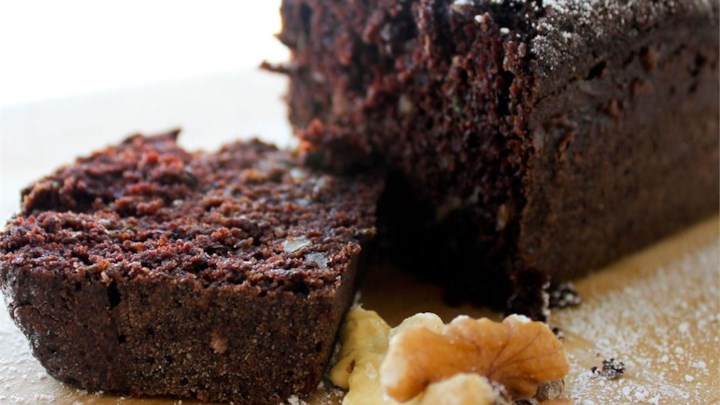

Ingredients
- 2 cups all-purpose flour
- 2 cups white sugar
- 3/4 cup unsweetened cocoa powder
- 2 teaspoons baking soda
- 1 teaspoon baking powder
- 1/2 teaspoon salt
- 1 teaspoon ground cinnamon
- 4 eggs
- 1 1/2 cups vegetable oil
- 3 cups grated zucchini
- 3/4 cup chopped walnuts
Directions
- Preheat oven to 350 degrees F (175 degrees C). Grease and flour
a 9x13 inch baking pan.
- In a medium bowl, stir together the flour, sugar, cocoa, baking
soda, baking powder, salt and cinnamon. Add the eggs and oil, mix
well. Fold in the nuts and zucchini until they are evenly distributed.
Pour into the prepared pan.
- Bake for 50 to 60 minutes in the preheated oven, until a knife
inserted into the center comes out clean. Cool cake completely before
frosting with your favorite frosting.

See this page for an Amazing Chocolate Zucchini Cake
Contact Me
Have a Question?
E-mail Kylin!
The University of Montana
32 Campus Drive
Missoula, MT 59812-0003
(406)243-0211